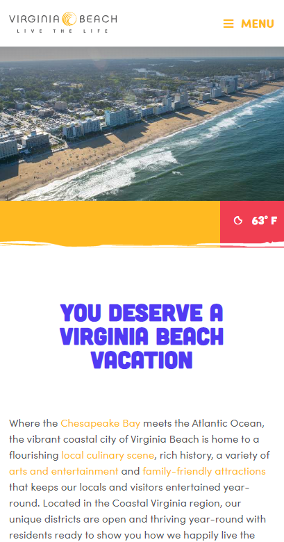
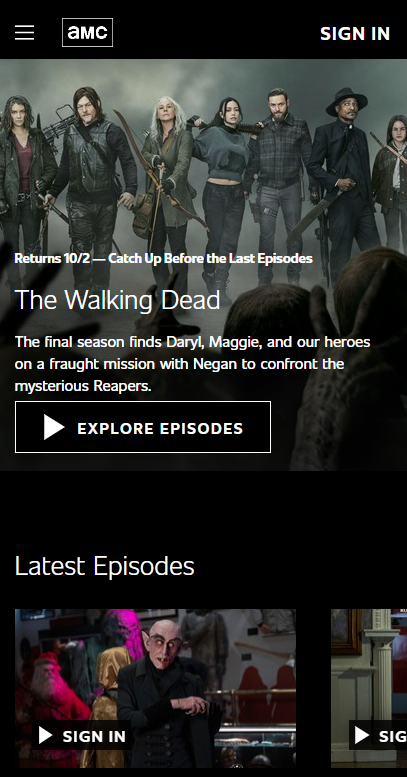

Rule of Thirds
Virginia Beach Tourism
The Rule of Thirds principle helps dictate how a page should be laid out so that the page is aesthetically pleasing for the viewer.
The Virginia Beach Tourism website homepage exemplifies the use of the Rule of Thirds by dividing the viewport into three primary components. The three components in this viewport are the picture of the oceanfront, a statement encouraging a call to action, and the content detailing more about where Virginia Beach is located and activities you could participate in.
The middle section containing "You deserve a Virginia Beach vacation" has been structured with a majority of the content in the center grid area with equal amounts of white space on all the borders.
PARC: Contrast
AMC Network Entertainment
The Contrast principle guides designers in distinguishing foreground and background elements to enhance the page. This principle incorporates all elements of design including colors, fonts, image placement.
AMC has combined a black background with a white san-serif font, and colorful thumbnail images of various video offerings.
The black background allows the thumbnails of the various episodes to pop and easily catch the viewer's attention. The distinct contrast betweent the black background and the white font makes content easier to read, as well as to find.
Hick's Law
Southwest Airlines
Hick's Law is "a simple idea that says that the more choices you present your users with, the longer it will take them to reach a decision." Most people will visit a webpage with a task that must be completed.
Southwest Airlines has brought the top three tasks to the very top of the viewport, minimizing the amount of time the user needs to complete their task. They have also put these tasks in order of frequency, with "Book a Flight" at the very top since that is what most visitors will do first.
Southwest Airlines has also limited the distractions in this main viewport, increasing the visitor's ability to achieve their original purpose for visiting the site.